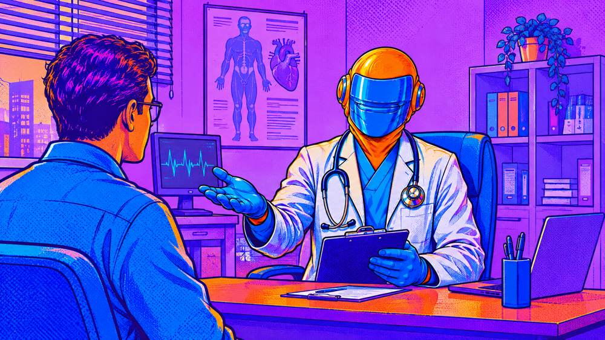
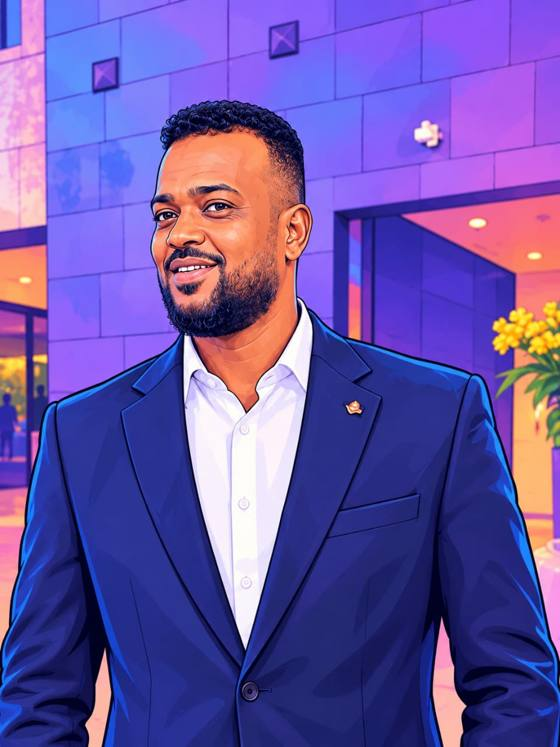
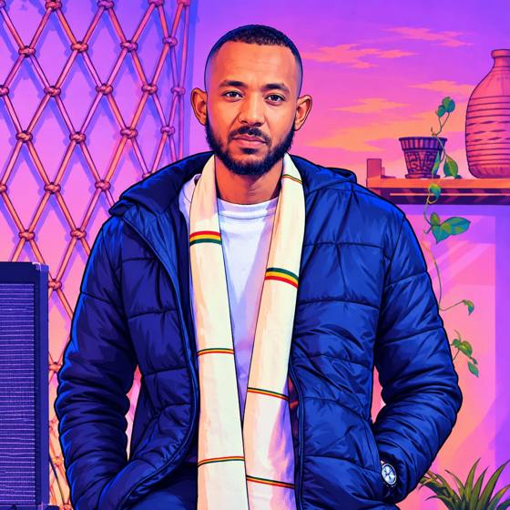
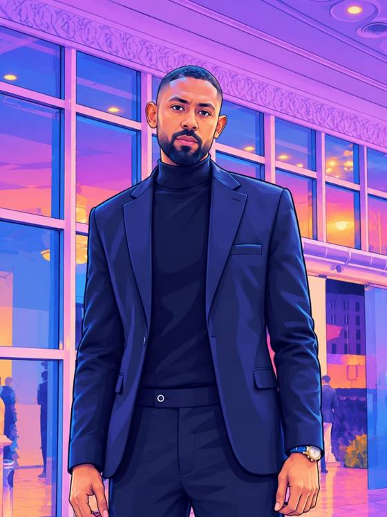
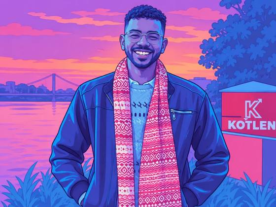

One integrated team of researchers, strategists, creatives and technologists, connecting insight to the decisions that matter
Start with the right question. We study the context around a decision to find where it breaks down, and what needs to change
What stands between your audience and action? →
Give insight a clear expression. From brand identity to film and physical spaces, every choice responds to the behavioural barrier we identified
What would make the next step feel right? →
Build around human behaviour. Websites, web applications and software designed around real decisions, so the experience helps people do what they came to do
Where can the experience make action easier? →
Put investment behind evidence. Small tests tell us what works; live performance guides where the next investment goes
Which activity is changing the result? →
A connected approach. Each discipline strengthens the others. Research informs the strategy. Creative gives it expression. Technology makes it usable. Media puts it to the test
A continuous, evidence-led cycle that turns insight into action, and action into growth. An epicycle is a small cycle moving within a larger orbit; it is also how we work: precise loops of learning that keep the whole system on course
The record before the name. These projects were delivered by our founders and team before the studio carried the Epicycle name. They demonstrate the experience behind our approach; they are not presented as Epicycle commissions

$2MBuilding trust and coordination around national health programmes: a $2M digital health solution co-designed and deployed at the ARPU Plus vaccination centre, with the Ministry of Health, World Bank and WHO
Moving people from a fitness intention to a first visit. $4M+ revenue attributed to digital on $300K+ of ad spend, across 14+ campaigns
Making a technology company’s expertise easier to trust: 13 organisations acquired in under three months after a new identity and sector-specific profiles
Growing an audience through a consistent creative identity: artist development, production, digital marketing and content strategy as one growth system. 40M+ total views, 200K+ subscribers
Keeping culturally meaningful production moving across borders during the war: stories for displaced young viewers, delivered on schedule. 10M+ YouTube views
A new space for a Sudanese school in Egypt and its community to connect: concept, production management, audio and video, delivered as a fully produced podcast
We combine research, strategy, design and technology to solve real human challenges and create positive, measurable change
To help people make healthier, more informed decisions through evidence, creativity and technology
A human-centred, evidence-led process that connects insight to action and action to growth
A multidisciplinary team of researchers, strategists, creatives and technologists, working as one
People rarely do what they say they will. They delay, forget, compare, doubt and follow the people around them. That is where our work begins
We study what people actually do, and why. Then we shape the message, the design and the product around it. The result is communication measured in decisions, sign-ups and attendance
We are small on purpose. The people who study the behaviour stay close to the people building the work. AI sits inside our toolkit to support research and production; the judgement stays human
“Everything belonging to Epicycle changes behaviour, rests on science, and accepts measurement” Our governing principle
Our healthcare focus is grounded in our CEO’s experience in public health communication, national programmes and institutional partnerships. The method travels because the underlying decision is always human

A communications and partnerships practitioner with experience across Sudan and the MENA region. Co-founded Sudan’s first PR agency, serving WHO, UNDP and the Netherlands embassy. Led the health-sector work in our portfolio
Communications · Partnerships · Healthcare

Founded the creative studio that became Epicycle. Leads concept-to-distribution production across video, podcast, music and events. Conceived Fannya, an art-event series for displaced women and children
Creative direction · Production · Culture

Full-stack and mobile developer across Saudi Arabia, the UAE and Sudan. Sole developer of RatioHub, a published fintech app. Leads technical development at CHERU116
Digital products · Web · Mobile
